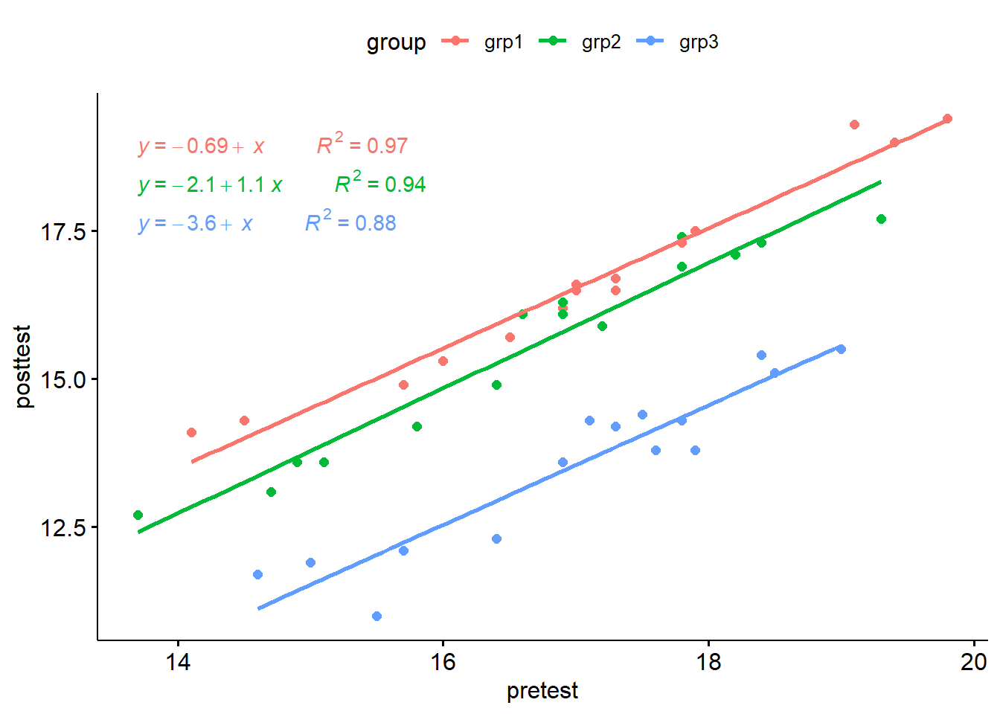

Phân tích hiệp phương sai Analysis of Covariance (ANCOVA) là trường hợp mở rộng của phân tích phương sai Analysis of Variance (ANOVA) khi cho phép phân tích thêm biến C (continuous) tác động lên biến Y (continuous) để tìm ra sự khác biệt giữa các nhóm trong biến X (category).
Ứng dụng dễ thấy nhất là nếu thực hiện phân tích phương sai ANOVA 1 yếu tố thông thường, giữa các nhóm trong biến X tác động lên biến Y mà có p-value > 0.05 chẳng hạn, tức là không thỏa điều kiện về ý nghĩa thống kê, thì ta có thể đánh giá thêm xem biến Y bản chất có bị ảnh hưởng bởi 1 biến C nào đó (ở dạng continuous) hay không, khi đó ta đưa biến C vào để hiệu chỉnh lại kết quả từ Y, rồi thực hiện phép phân tích ANCOVA để tìm ra p-value lúc này ở dạng kết quả hiệu chỉnh cho phép đánh giá chính xác hơn sự khác biệt giữa các nhóm trong biến X (category).
ANCOVA có hai loại one-way và two-way tương tự như ANOVA, tương ứng cho số lượng yếu tố X trong mô hình.
Các giả định của ANCOVA
Linearity between the covariate and the outcome variable at each level of the grouping variable. This can be checked by creating a grouped scatter plot of the covariate and the outcome variable.
Homogeneity of regression slopes. The slopes of the regression lines, formed by the covariate and the outcome variable, should be the same for each group. This assumption evaluates that there is no interaction between the outcome and the covariate. The plotted regression lines by groups should be parallel.
The outcome variable should be approximately normally distributed. This can be checked using the Shapiro-Wilk test of normality on the model residuals.
Homoscedasticity or homogeneity of residuals variance for all groups. The residuals are assumed to have a constant variance (homoscedasticity)
No significant outliers in the groups
12.0.2 Case study cho one-way ANCOVA
Researchers investigated the effect of exercises in reducing the level of anxiety. Therefore, they conducted an experiment, where they measured the anxiety score of three groups of individuals practicing physical exercises at different levels (grp1: low, grp2: moderate and grp3: high). The anxiety score was measured pre- and 6-months post-exercise training programs. It is expected that any reduction in the anxiety by the exercises programs would also depend on the participant’s basal level of anxiety score. In this analysis we use the pretest anxiety score as the covariate and are interested in possible differences between group with respect to the post-test anxiety scores.
Tạm dịch: Nghiên cứu này từ dataset anxiety của package datarium. Mục tiêu của nghiên cứu là khảo sát ảnh hưởng của việc tập thể dục lên khả năng giảm căng thẳng của sinh viên.
Trong đó theo dõi 45 sinh viên, chia làm 3 nhóm (15 bạn/nhóm) ở 3 mức độ khác nhau về việc tập thể dục, ký hiệu tương ứng là grp1 tập thể dục ít, grp2 tập thể dục trung bình, grp3 tập thể dục nhiều. Sau đó các nhà nghiên cứu đo điểm căng thẳng của từng bạn sinh viên xem như thế nào ở 6 tháng trước khi bắt đầu tập thể dục (pretest) và 6 tháng sau khi tập thể dụng (postest).
Câu hỏi đặt ra là: kết quả của việc tập thể dục theo các cường độ khác nhau như vậy (ít, vừa, nhiều) có làm giảm căng thẳng hay không?
Nếu bình thường chỉ phân tích ANOVA thì ta chỉ lấy biến postest là biến y để làm cơ sở đưa vào phân tích one-way ANOVA với yếu tố là mức độ tập thể dục. Tuy nhiên rõ ràng giữa các bạn sinh viên này thì trước khi tham gia chương trình tập thể dục này các bạn đã có mức độ căng thẳng khác nhau rồi (đo thông qua pretest) nên nếu chúng ta không hiệu chỉnh giá trị này thì kết quả thu được từ phân tích phương sai sẽ bị ảnh hưởng (lỡ nhóm tập thể dục nhiều, theo lý thuyết sẽ giảm căng thẳng, nhưng vì các bạn sinh viên chọn ngẫu nhiên trong nhóm này có sự căng thẳng nền trước đó dẫn đến cho dù có tập thể dục nhiều thì điểm căng thẳng cũng không giảm). Đây là lý do vì sao chúng ta cần đưa covariate (gọi là hiệp biến) ở đây là yếu tố căng thẳng nền vào, hoặc có thể đưa thêm yếu tố độ tuổi vào cũng được, nghĩa là covariate có thể từ 1 trở lên để tác động đến biến y sau cùng, giúp điều chỉnh kết quả của y (postest) tương ứng với từng nhóm trong biến x (mức độ tập thể dục) được chính xác hơn.
There was a linear relationship between pre-test and post-test anxiety score for each training group, as assessed by visual inspection of a scatter plot.
library(tidyverse)library(ggpubr)library(rstatix)library(broom)ggscatter(data = anxiety, x ="pretest", y ="posttest", color ="group", add ="reg.line") +stat_regline_equation(aes(label =paste(..eq.label.., ..rr.label.., sep ="~~~~~~~~~~"),color = group),show.legend =NULL )

12.0.3.2 2. Homogeneity of regression slopes
This assumption checks that there is no significant interaction between the covariate and the grouping variable.
There was homogeneity of regression slopes as the interaction term was not statistically significant, F(2, 39) = 0.13, p = 0.88.
anxiety %>%anova_test(posttest ~ group*pretest)
ANOVA Table (type II tests)
Effect DFn DFd F p p<.05 ges
1 group 2 39 209.314 1.40e-21 * 0.915
2 pretest 1 39 572.828 6.36e-25 * 0.936
3 group:pretest 2 39 0.127 8.81e-01 0.006
12.0.3.3 3. Normality of residuals
# Fit the model, the covariate goes firstmodel <-lm(posttest ~ pretest + group, data = anxiety)# Inspect the model diagnostic metricsmodel.metrics <-augment(model)[, c(1, 2, 3, 5, 8, 9)]model.metrics <-as.data.frame(model.metrics)model.metrics
Sau khi dataset đã thỏa các điều kiện để thực hiện ANCOVA, giờ ta đưa vào model để tính ra kết quả.
After adjustment for pre-test anxiety score, there was a statistically significant difference in post-test anxiety score between the groups, F(2, 41) = 218.63, p < 0.0001.
res.aov <- anxiety %>%anova_test(posttest ~ pretest + group) # pretest là covariate phải đặt phía trước.get_anova_table(res.aov)
ANOVA Table (type II tests)
Effect DFn DFd F p p<.05 ges
1 pretest 1 41 598.321 4.48e-26 * 0.936
2 group 2 41 218.629 1.35e-22 * 0.914
Thực hiện phân hạng Post-hoc test
Pairwise comparisons can be performed to identify which groups are different. The Bonferroni multiple testing correction is applied.
# Pairwise comparisonslibrary(emmeans)
Warning: package 'emmeans' was built under R version 4.4.1
Welcome to emmeans.
Caution: You lose important information if you filter this package's results.
See '? untidy'
# Display the adjusted means of each group# Also called as the estimated marginal means (emmeans)get_emmeans(pwc)
# A tibble: 3 × 8
pretest group emmean se df conf.low conf.high method
<dbl> <fct> <dbl> <dbl> <dbl> <dbl> <dbl> <chr>
1 16.9 grp1 16.4 0.106 41 16.2 16.7 Emmeans test
2 16.9 grp2 15.8 0.107 41 15.6 16.0 Emmeans test
3 16.9 grp3 13.5 0.106 41 13.2 13.7 Emmeans test
12.0.5 Trình bày kết quả
An ANCOVA was run to determine the effect of exercises on the anxiety score after controlling for basal anxiety score of participants.
After adjustment for pre-test anxiety score, there was a statistically significant difference in post-test anxiety score between the groups, F(2, 41) = 218.63, p < 0.0001.
Post hoc analysis was performed with a Bonferroni adjustment. The mean anxiety score was statistically significantly greater in grp1 (16.4 +/- 0.15) compared to the grp2 (15.8 +/- 0.12) and grp3 (13.5 +/_ 0.11), p < 0.001.
Tạm dịch: Sau khi thực hiện phép phân tích ANCOVA với việc hiệu chỉnh biến pretest thì ta thấy kết quả tập thể dục của các nhóm thật sự khác biệt nhau, trong đó nhóm tập thể dục nhiều (grp3) có chỉ số căng thẳng thấp nhất.
# Visualization: line plots with p-valuespwc <- pwc %>%add_xy_position(x ="group", fun ="mean_se")ggline(get_emmeans(pwc), x ="group", y ="emmean") +geom_errorbar(aes(ymin = conf.low, ymax = conf.high), width =0.2) +stat_pvalue_manual(pwc, hide.ns =TRUE, tip.length =FALSE) +labs(subtitle =get_test_label(res.aov, detailed =TRUE),caption =get_pwc_label(pwc) )